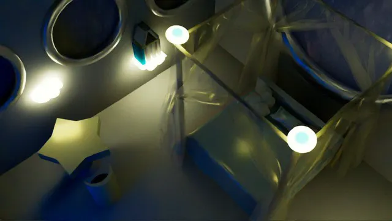
🔍 拡大する
01
ブランドの印象をつくるWeb・UI・グラフィックデザイン
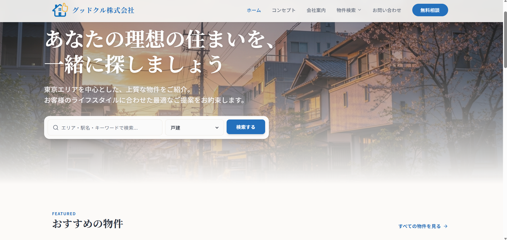
WEB DESIGN / BRANDING
不動産会社「グッドクル株式会社」のブランディングの一環として、シンボルロゴのデザインからWebサイトの構築・オンライン公開までを一貫して手がけました。ロゴデザインでは「家」と「いいね（グッド）」のモチーフを組み合わせて誠実さと親しみやすさを表現し、サイト全体のトーン＆マナーも青を基調とした信頼感のあるデザインで統一しています。実装においてはコーディング知識が全くない状態からのスタートでしたが、生成AI技術を積極的に活用して構造設計やコード生成を行い、最終的に実際のWebサイトとしてデプロイ・公開まで自力で到達させました。新しいテクノロジーを柔軟に取り入れ、アイデアを形にする実行力を体現したプロジェクトです。
VIEW PROJECT →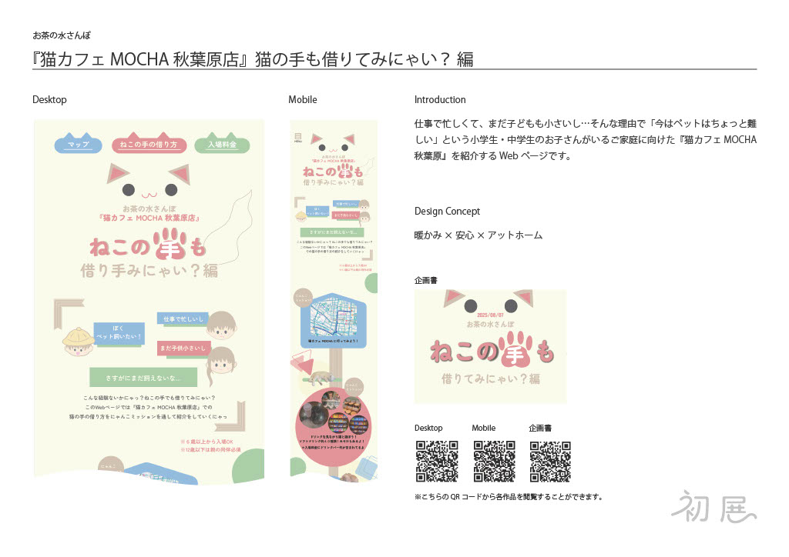
UI / UX DESIGN
忙しい日々を送るご家庭や「ペットを飼いたいけれどまだ難しい」と感じている子どもたちに向けた、体験型Webコンテンツの企画およびUI/UXデザインです。Figmaを用いてデスクトップおよびモバイル両方のブレイクポイントに対応したレスポンシブデザインを構築しました。「暖かみ×安心×アットホーム」をコンセプトに、やわらかな色調と親しみやすいキャラクター要素を散りばめ、ユーザーが楽しく猫カフェでの過ごし方を疑似体験できるよう情報設計からビジュアル展開まで細部まで作り込んでいます。
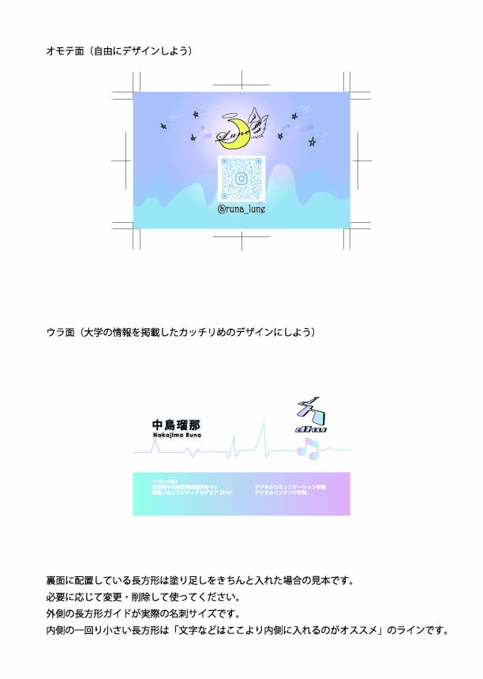
GRAPHIC DESIGN / PRINT
Adobe Illustratorを使用し、印刷入稿データ（トンボ・塗り足し）のグラフィック制作工程を考慮して制作したパーソナル名刺デザインです。表面は月や星の幻想的なイラストレーションと柔らかなグラデーションで個人の世界観やクリエイティブな世界観を表現し、裏面は大学情報や所属情報を整然と配置した視認性の高いレイアウトに仕上げています。自由な発想によるビジュアル表現と、印刷物としての正確なフォーマット設計の両立を意識して制作しました。
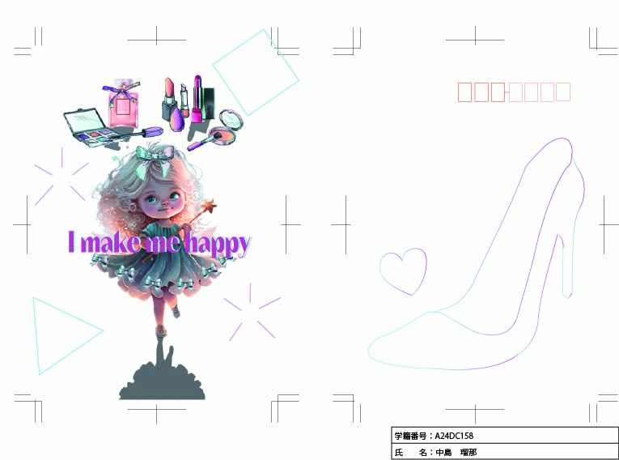
GRAPHIC DESIGN
Adobe Illustratorを用いて制作したグラフィックポストカードです。「自分らしさを大切に」というポジティブなメッセージを軸に、繊細なキャラクターイラストとコスメティックアイテムのコラージュ、ポップなタイポグラフィを組み合わせて構成しました。ハイヒールのアウトラインを描いた裏面デザインを含め、カード全体を通して自分を高めるワクワク感やストーリー性を感じられるようなビジュアル展開を目指しました。
02
3D空間・実写・VFXを組み合わせた映像表現
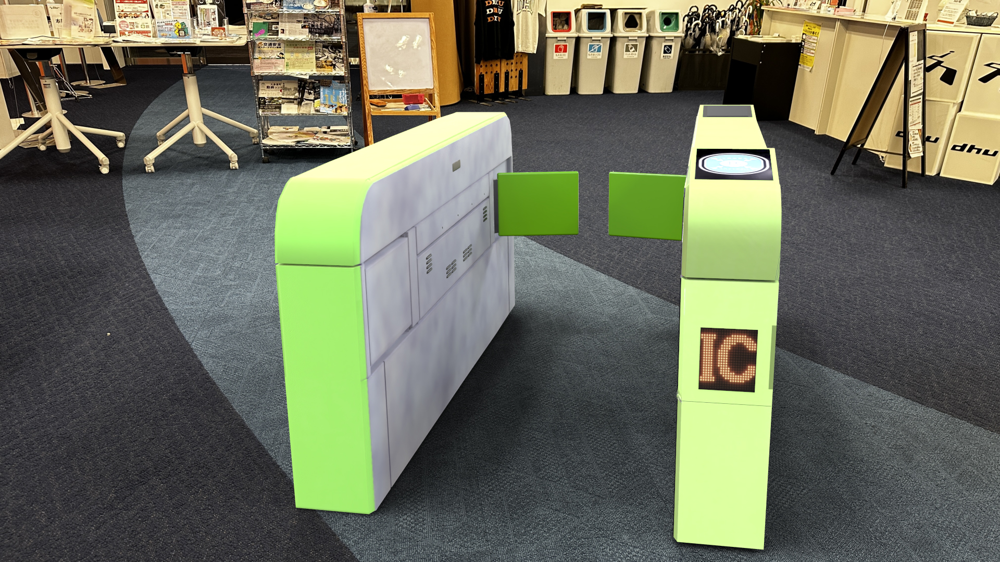
MAYA / VFX / COMPOSITING
Autodesk Mayaでモデリングした駅の自動改札機を、実写で撮影した現実空間へと違和感なく合成したVFX（視覚効果）作品です。改札機の各種パーツやICカード読み取り部のテクスチャ制作、グリーンのカラーリングやディテール表現をMayaで追い込み、After Effects上で実写映像の影やカメラアングル、照明のトーンと正確にトラッキング・コンポジットを行いました。CGオブジェクトがまるでその場に実在しているかのような自然な存在感と、現実とデジタルの境目を無くす合成精度を追求しています。

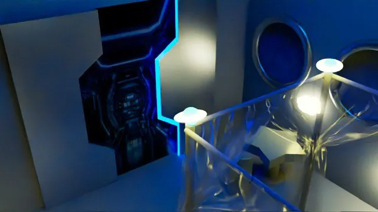
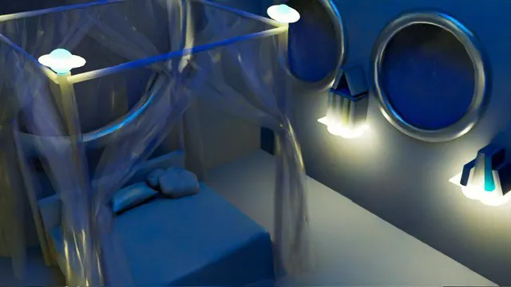
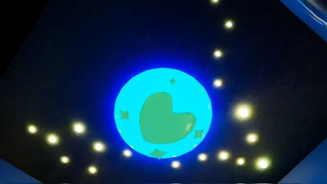
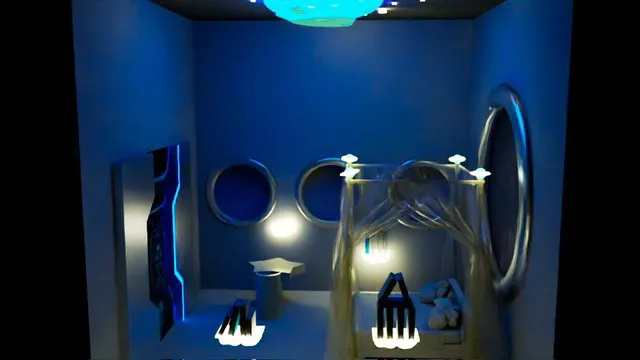
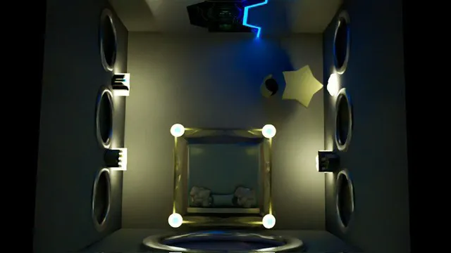
3DCG / HARD SURFACE / LIGHTING
近未来の宇宙船内を舞台に、SF的な世界観と静寂感を意識して制作した空間デザイン作品です。ハードサーフェスモデリングの精密さを突き詰めるだけでなく、窓外に広がる星空の質感や室内を照らす間接照明の重厚な光の反射にこだわり、画面全体に奥行きと静かな没入感を生み出すライティングを構築しました。別アングルや細部のディテールカットを含めた多角的なビジュアルで構築しています。
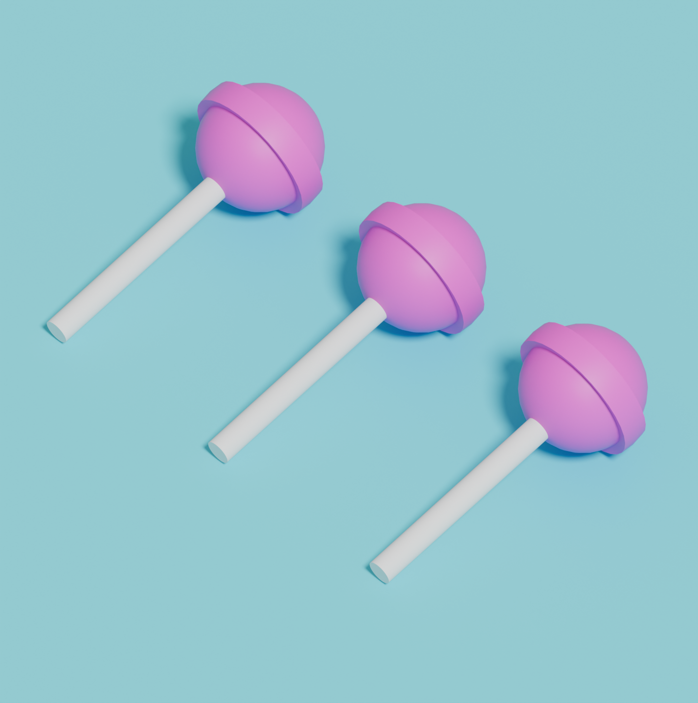
BLENDER / 3DCG / RENDERING
Blenderを使用して制作したキャンディーの3DCG作品です。球体をベースとした形状にパーツを組み合わせ、キャンディー特有の丸みや立体感を意識してモデリングしました。パステルカラーのマテリアルと柔らかなライティングを組み合わせ、かわいらしくポップなビジュアルになるよう仕上げています。複数のオブジェクトを配置し、構図や影の落ち方まで調整することで、シンプルな形状の中にも奥行きのあるレンダリングを目指しました。
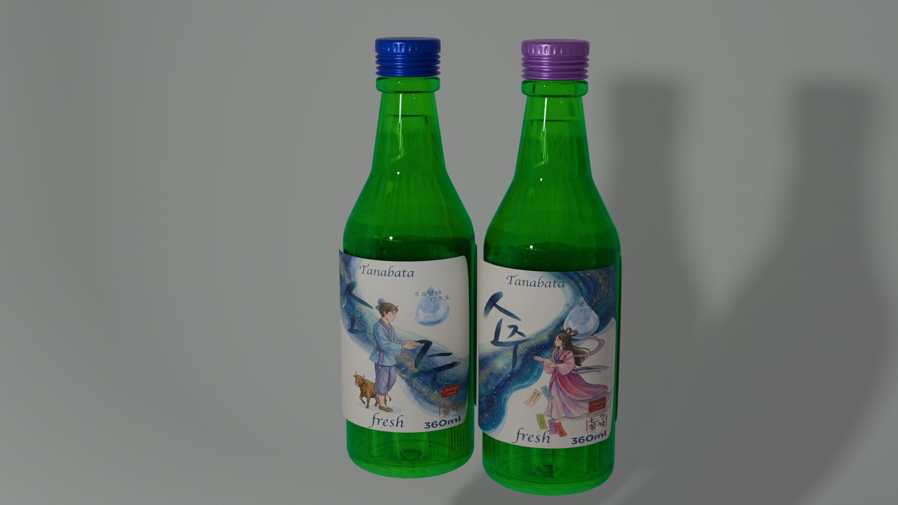
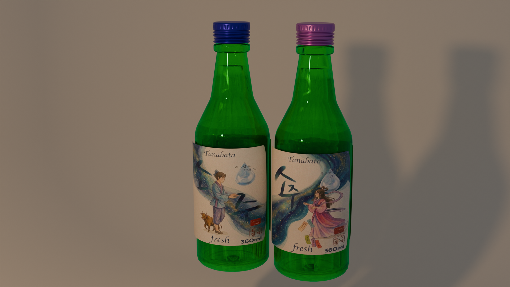
BLENDER / PRODUCT DESIGN / AI
七夕をテーマに制作した、ソジュ風ボトルの3DCGプロダクトデザインです。Blenderを使用してボトルのモデリングやマテリアル、ライティング、レンダリングまで制作しました。ラベルデザインには生成AIを活用し、七夕をイメージした織姫と彦星、天の川などのモチーフを取り入れています。3DCGによる立体的なプロダクト表現と生成AIによるビジュアル制作を組み合わせ、季節感のあるパッケージデザインとしてまとめました。
3D ANIMATION
キャラクターの感情変化を3D空間上で直感的に表現することを目的としたアニメーション研究作品です。顔のパーツの繊細な動きに連動させてハートや吹き出しといった3Dシンボルをタイミング良く変形・出現させることで、視覚的なポップさとコミカルな感情表現の強調を両立させました。
03
音・映像・タイポグラフィを組み合わせたモーション表現
AFTER EFFECTS / MOTION DESIGN
実写映像に対してカラフルで躍動感あふれる2Dモーショングラフィックスを重ね合わせたコンポジット作品です。楽曲の持つ軽快なリズムや音のグラデーションに完全に同期するようAfter Effectsでキーフレームの緻密なイージング調整を行い、視覚と聴覚が一体となって弾むような心地よい爽快感を演出しました。
LYRIC VIDEO / TYPOGRAPHY
楽曲の世界観やメッセージ性をタイポグラフィの動きだけでキャッチーに伝えるリリックビデオ作品です。文字が出現・消失する速度や画面全体のレイアウト展開にメリハリをつけることで、一瞬で視聴者の目を引くインパクトを持たせつつ、SNSカルチャーにもフィットするフレッシュでキュートなビジュアル表現を追求しました。
04
中島 瑠那 / Nakajima Runa
デジタルコンテンツ学科にて、ブランディングデザイン、Web/UIデザイン、3DCG・VFX制作、モーショングラフィックスまで幅広くグラフィック表現を研究しています。FigmaやIllustratorによる平面・UI設計から、Maya・After Effectsを掛け合わせた立体表現や映像コンポジット、AI技術を取り入れたWebコーディングまで、ジャンルを問わずアイデアをハイクオリティな形に具現化します。